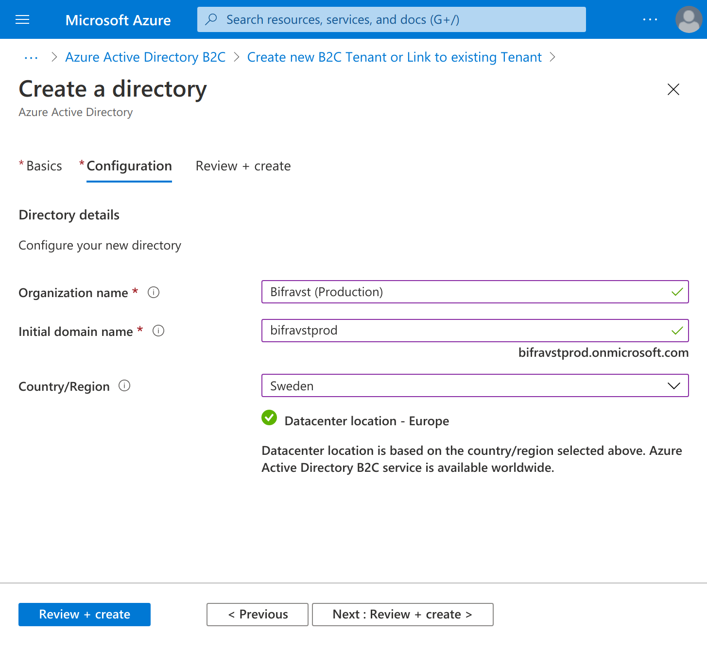
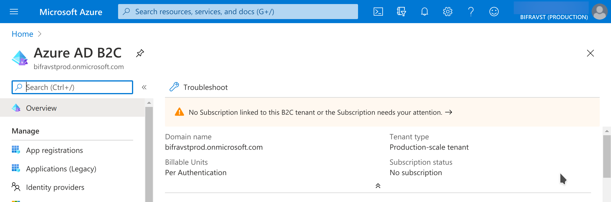
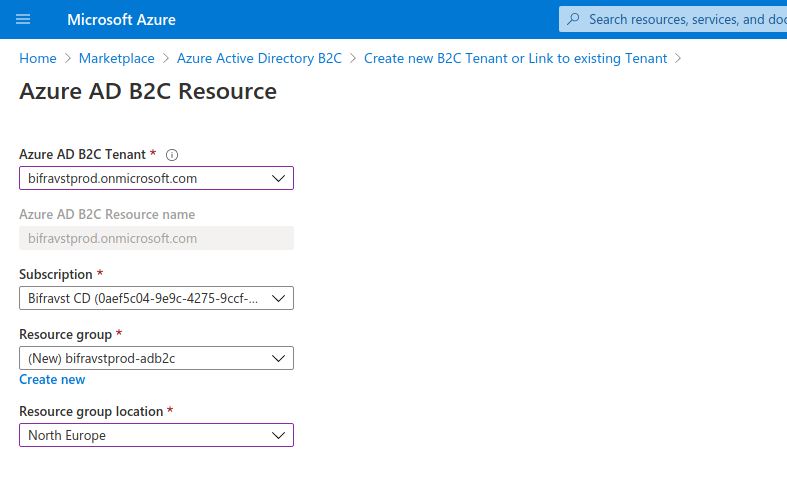
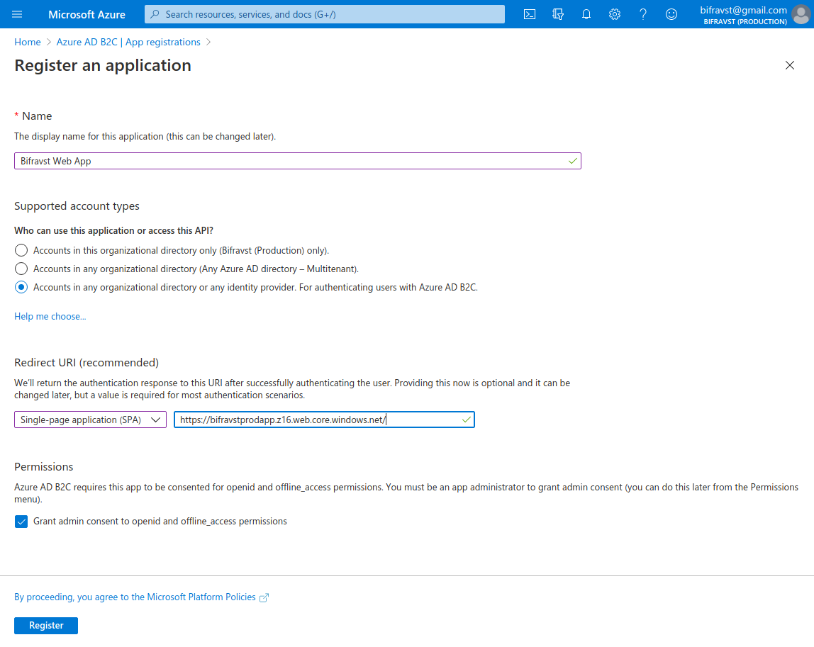
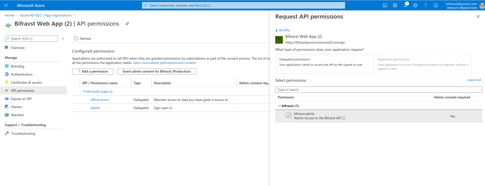
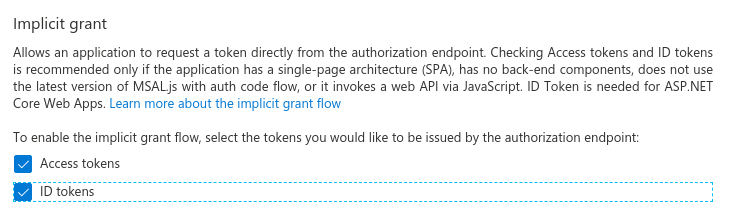
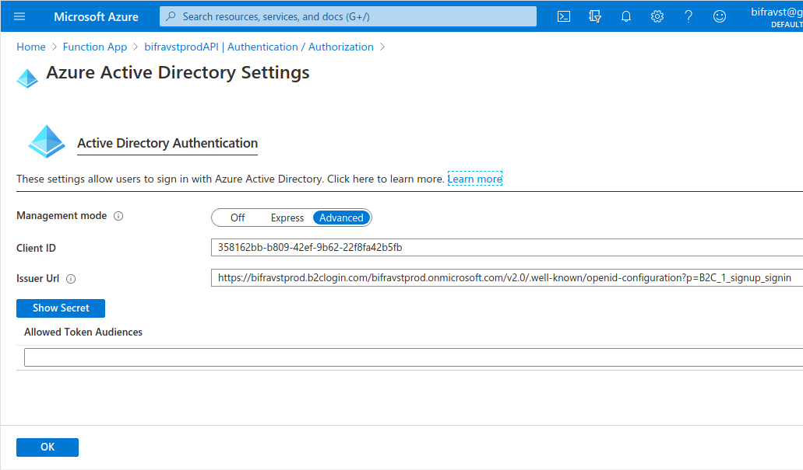

Continuous Deployment¶
Continuous Deployment should be deployed with a dedicated subscription to have clear control over permissions and costs.
Create a subscription for Bifravst¶
Go to the Subscriptions blade and add a new subscription for Bifravst and name it Bifravst [CD].
After the subscription has been created navigate again to the Subscriptions blade and copy the subscription id of the newly created subscription:
export SUBSCRIPTION_ID="<subscription id>"
Create an Azure Active Directory B2C¶
Note
This can currently only be achieved through the CLI. If you know how to make the whole set-up process simpler, please provide your input here!
Go to the Marketplace blade and search for Azure Active Directory [B2C].
Click the Azure Active Directory [B2C] tile, and on then click the Create button.
Select Create a new Azure AD B2C Tenant.
Use these settings:
Organization name: Bifravst (Production)
Initial domain name:
bifravstprod(you need to pick something else that fits your project because this name is globally unique)Country/Region: Sweden (or pick a location that is closer to you)
Create Directory settings¶
Click Next: Review + create to see the summary and then click Create to create the new Active Directory B2C. It will take a while to be created.
Copy the initial domain name:
export B2C_TENANT=bifravstprod
Switch to the newly created directory, by following the link in the success message.
You need to link a Subscription to the B2C Directory, follow the link in the notification message to find the instructions.
Link Subscription¶
Select the subscription and create a new resource group for this assignment:
Link Subscription¶
Switch back to the B2C directory
Create an App Registration:
Name: Bifravst Web App
Redirect URI (make sure to select SPA):
https://bifravstprodapp.z16.web.core.windows.net/(instead ofbifravstprodappyou need to pick something else that fits your project because this name is globally unique)Create App Registration settings¶
In Expose an API set the Application ID URI to
apiClick + Add a scope and create a new scope:
Scope name:
bifravst.adminAdmin consent display name: Admin Access to the Bifravst API
Admin consent description: Allows admin access to all resources exposed through the Bifravst API
In API permissions click + Add a permission and under My APIs select the app registration
Enable the
bifravst.adminpermission and click Add permissionClick Grant admin consent for <your main directory>
Add Scope¶
store the application (client) id and the Directory (tenant) ID of the created Active Directory B2C App registration:
export APP_REG_CLIENT_ID="<application (client) id>"
Enable the implicit grant flow for Access tokens and ID tokens and click Save:
Enable implicit grant flow¶
store the subdomain name used in the Redirect URI:
export APP_NAME=bifravstprodapp
Create the Sign up and sign [in user flow for local users, and name it
signup_signin(Reference).Switch back to the main directory
Find the Bifravst Azure Function App
Select Authentication / Authorization
Select Log in with Azure Active Directory for Action to take when request is not authenticated
Click Azure Active Directory and configure the authentication using the Advanced Management mode:
Client ID:
$APP_REG_CLIENT_IDIssuer URL:
https://${B2C_TENANT}.b2clogin.com/${B2C_TENANT}.onmicrosoft.com/v2.0/.well-known/openid-configuration?p=B2C_1_signup_signinFunction App Settings¶
Acquire credentials for the CI runner¶
Now drop into a shell and login:
az login
Make sure you have enabled the right subscription:
az account set --subscription $SUBSCRIPTION_ID
# Verify that it is set to default
az account list --output table
Enable required resources
az provider register --namespace Microsoft.AzureActiveDirectory
az provider register --namespace Microsoft.Storage
az provider register --namespace Microsoft.Insights
az provider register --namespace Microsoft.SignalRService
az provider register --namespace Microsoft.DocumentDB
az provider register --namespace Microsoft.Devices
az provider register --namespace Microsoft.Web
Now create the CI credentials:
az ad sp create-for-rbac --name https://github.com/ --role Contributor --sdk-auth --scopes /subscriptions/${SUBSCRIPTION_ID} > ci-credentials.json
Create a resource group for Bifravst
az group create --name ${RESOURCE_GROUP_NAME:-bifravst} --location ${LOCATION:-northeurope}
Fork the Bifravst Azure project and add these secrets.
AZURE_CREDENTIALS: store the contents of the JSON file created aboveAPP_REG_CLIENT_ID: the application (client) id of the created Active Directory B2C App registrationB2C_TENANT: the initial domain name of the created Active Directory B2C
Now trigger a deploy.
You can now create device credentials for this environment.